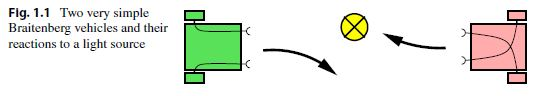

The term artificial intelligence stirs emotions. For one thing there is our fascination with intelligence, which seemingly imparts to us humans a special place among life forms. Questions arise such as “What is intelligence?”, “How can one measure intelligence?” or “How does the brain work?”. All these questions are meaningful when trying to understand artificial intelligence. However, the central question for the engineer, especially for the computer scientist, is the question of the intelligent machine that behaves like a person, showing intelligent behavior.
The attribute artificial might awaken much different associations. It brings up fears of intelligent cyborgs. It recalls images from science fiction novels. It raises the question of whether our highest good, the soul, is something we should try to understand, model, or even reconstruct.
With such different offhand interpretations, it becomes difficult to define the term artificial intelligence or AI simply and robustly. Nevertheless I would like to try, using examples and historical definitions, to characterize the field of AI. In 1955, John McCarthy, one of the pioneers of AI, was the first to define the term artificial intelligence, roughly as follows:
The goal of AI is to develop machines that behave as though they were intelligent.
To test this definition, the reader might imagine the following scenario. Fifteen or so small robotic vehicles are moving on an enclosed four by four meter square surface. One can observe various behavior patterns. Some vehicles form small groups with relatively little movement. Others move peacefully through the space and gracefully avoid any collision. Still others appear to follow a leader. Aggressive behaviors are also observable. Is what we are seeing intelligent behavior?
According to McCarthy’s definition the aforementioned robots can be described as intelligent. The psychologist Valentin Braitenberg has shown that this seemingly complex behavior can be produced by very simple electrical circuits. Socalled Braitenberg vehicles have two wheels, each of which is driven by an independent electric motor. The speed of each motor is influenced by a light sensor on the front of the vehicle as shown in Fig. 1.1. The more light that hits the sensor, the faster the motor runs. Vehicle 1 in the left part of the figure, according to its configuration, moves away from a point light source. Vehicle 2 on the other hand moves toward the light source. Further small modifications can create other behavior patterns, such that with these very simple vehicles we can realize the impressive behavior described above.
Two very simple Braitenberg vehicles and their reactions to a light source
the front of the vehicle as shown in Fig. 1.1. The more light that hits the sensor, the faster the motor runs. Vehicle 1 in the left part of the figure, according to its configuration, moves away from a point light source. Vehicle 2 on the other hand moves toward the light source. Further small modifications can create other behavior patterns, such that with these very simple vehicles we can realize the impressive behavior described above.
Clearly the above definition is insufficient because AI has the goal of solving difficult practical problems which are surely too demanding for the Braitenberg vehicle. In the Encyclopedia Britannica one finds a Definition that goes like:
AI is the ability of digital computers or computer controlled robots to solve problems that are normally associated with the higher intellectual processing capabilities of humans . . .
But this definition also has weaknesses. It would admit for example that a computer with large memory that can save a long text and retrieve it on demand displays intelligent capabilities, for memorization of long texts can certainly be considered a higher intellectual processing capability of humans, as can for example the quick multiplication of two 20-digit numbers. According to this definition, then, every computer is an AI system. This dilemma is solved elegantly by the following definition by Elaine Rich:
Artificial Intelligence is the study of how to make computers do things at which, at the moment, people are better.
Rich, tersely and concisely, characterizes what AI researchers have been doing for the last 50 years. Even in the year 2050, this definition will be up to date.
Tasks such as the execution of many computations in a short amount of time are the strong points of digital computers. In this regard they outperform humans by many multiples. In many other areas, however, humans are far superior to machines. For instance, a person entering an unfamiliar room will recognize the surroundings within fractions of a second and, if necessary, just as swiftly make decisions and plan actions. To date, this task is too demanding for autonomous robots. According to Rich’s definition, this is therefore a task for AI. In fact, research on autonomous robots is an important, current theme in AI. Construction of chess computers, on the other hand, has lost relevance because they already play at or above the level of grandmasters.
It would be dangerous, however, to conclude from Rich’s definition that AI is only concerned with the pragmatic implementation of intelligent processes. Intelligent systems, in the sense of Rich’s definition, cannot be built without a deep un-derstanding of human reasoning and intelligent action in general, because of which neuroscience is of great importance to AI. This also shows that the other cited definitions reflect important aspects of AI.
A particular strength of human intelligence is adaptivity. We are capable of adjusting to various environmental conditions and change our behavior accordingly through learning. Precisely because our learning ability is so vastly superior to that of computers, machine learning is, according to Rich’s definition, a central subfield of AI.